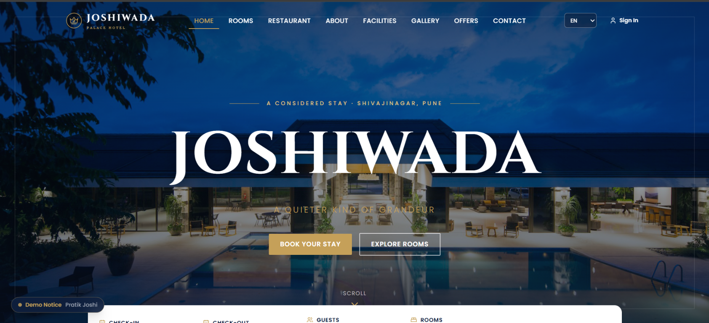

Available for opportunities
I build web experiences that feel effortless.
I'm Pratik Joshi, a Front-End Developer with 1.2 years of hands-on experience creating responsive, user-friendly, and visually engaging websites using HTML5, CSS3, JavaScript, React.js, Preact.js, Tailwind CSS, Bootstrap, and WordPress.

Based inPune, Maharashtra
01
Scroll to discover
Full Stack Developer
Selected work
Projects with purpose.
Thoughtful interfaces, practical interactions, and an eye for how a product feels in use.

Toolkit
Built to move from idea to implementation.
Technologies I use to create responsive and engaging digital experiences.
01
HTML5
Semantic, accessible structure for modern web content.
02
CSS3
Responsive styling, design systems, and polished interfaces.
03
JavaScript
Interactive UI logic and dynamic client-side behavior.
04
React.js
Reusable components and scalable frontend architecture.
05
Tailwind CSS
Utility-first styling for modern, consistent layouts.
06
WordPress
Website content updates, page layouts, and CMS maintenance.
A little about me
Curious by default. User-focused by practice.
I'm a Front-End Developer with a strong interest in building responsive, user-friendly interfaces that balance visual quality with real-world usability. I enjoy creating clean layouts, smooth interactions, and experiences that feel intuitive across devices.
Start a conversationEducation
Bachelor of Science (Information Technology)
Sabarmati University, Ahmedabad, 2021-2024Experience
Front-End Developer
Alpha Developer Team LLP, Oct 2024 - Nov 2025Get in touch
Looking for a front-end developer
who can build with purpose?
I’m open to full-time front-end developer opportunities and excited to contribute to a product-focused team building useful, polished web experiences.
pratikjoshi0068@gmail.com